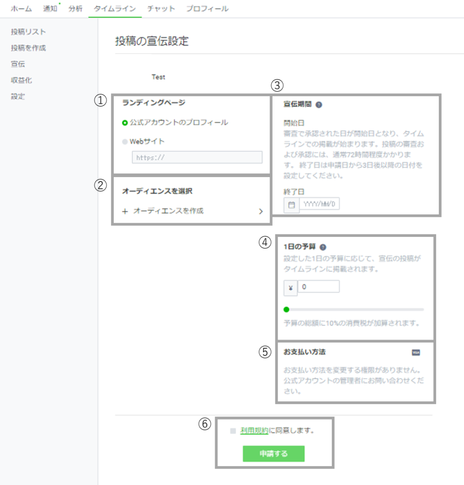
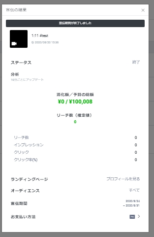
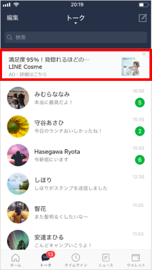
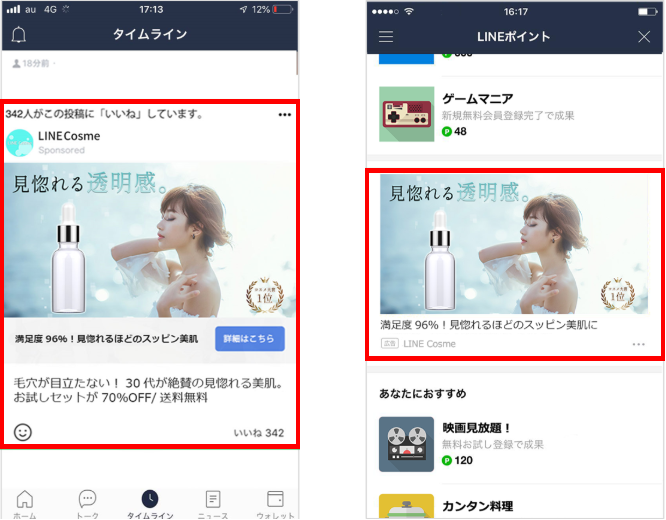

#006 タイムラインタブ追加で、宣伝・収益化

先週（9月23日水曜日）、「LINE Official Account Manager」上で「タイムライン」というタブが追加されました！ たしかに、PCから「LINE Official Account Manager」にログインすると、今まで左側の編集メニューにあった「タイムライン」がタブとして表示されています。ここから、タイムライン上に宣伝・広告を打つことができ、友だち数や規模によっては収益化もできます。 本日は、現時点でmatsumotoが把握している情報にもとづき、これらの機能についてご紹介しますね！
１．「タイムライン」って前から投稿できたよね？
タイムライン投稿自体は以前からあった機能ですが、今回、PCの『LINE Official Account Manager』上に「タイムライン」タブが移動し、「宣伝（セルフプロモーション」と「収益化」ができるようになりました！
LILNE公式アカウントでは、よく「無料で利用できる！」とうたわれがちですが、「宣伝」は「IMP課金」といって、Instagram広告などのように課金されます。具体的には、1日あたりお幾ら「宣伝」するか自分で設定する、ということのようです。もう少し詳しい情報がわかり次第、またこちらのBlogで説明していきますね！
２．「宣伝」する方法

今回新設されたPC上の「タイムライン」タブから、「宣伝（セルプロモーション）を設定することができます。これをみると、「宣伝」には「ランディングページ」が必要？であることがわかります。「ランディングページ」は通常「LP」と呼ばれ、ご自身のWEBサイト上で作るものですが、ここでは「LINE公式アカウントのプロフィール」がその役割を果たしてくれるという認識でよいと思います。もちろん、ご自分のWEBサイトをお持ちの方は、「Webサイト」を選んでここにサイトのURL（もしくはサイト内のキャンペーンページなど、特定のページのURL）をご記入ください！ 自社サービスに直接誘導できる導線となりますので、ぜひうまく活用してくださいね！

「宣伝」の期間は最大30日間！もちろん、宣伝期間が終わったら、「宣伝履歴」から結果を確認することもできます。データ分析などに不慣れな方でも、この「分析」結果をみれば自分の「宣伝」がどのように効果をあげたのか一目瞭然になるので、ワクワウしますよ！ 上手に「宣伝」を使いこなして、友だち追加や売上アップにつなげていきましょう！
3．混同しがちな「LINE広告」とは？

スマホで自分のLINEトーク画面を開いたとき、トップに企業アカウントの広告が表示されることがありますが、あれは「Smart Channel」というLINE広告の一つで、他にも色々な種類のLINE広告があります。こちらもLINE公式アカウントならではの機能なので、上手にビジュアルなど利用してご自分のビジネスやサービスをアピールしましょう。

３．宣伝やLINE広告を利用するときの注意点
「宣伝」の費用については先にふれましたが、「LINE広告」は「CPF課金」といって、友だち追加された数に応じた額を請求されます。「宣伝」や「LINE広告」を利用する際には、必ずLINEの審査を通過しなければいけません。「宣伝」は投稿済みのタイムラインを広告として使用するので、審査申請をしてから3日間程度で承認されるようです。対して「LINE広告」を出すには、広告用アカウントを開設してからビジュアルやメディアを作成してから審査という手順なので承認までだいたい10日程度かかるようです。
４．収益化（マネタイゼーション）について
これは、「宣伝」や「広告」を掲載することで、広告収入を得られるというものです。今の時点では、タイムラインのフォロワー数が500人以上いて、１ヶ月以内のタイムライン上の動画の累計再生時間が50時間以上ある公式アカウントの人しか利用できません。ブログ収益などと同様に、自分の友だち（ファン）を増やせば、収益化も夢じゃない！ということですね。このブログもご参考にしていただいて、友だちを増やして収益化を目指しましょう！
５．最後に
先週追加された新しい機能については、以上です。ご理解いただけましたでしょうか？ 「もっと詳しく知りたい！」「広告の作り方を教えてほしい」など、サポートが必要な方はぜひお気軽にご相談くださいね！今なら相談無料なので、LINE公式アカウントとは？というような初歩的な内容から、詳しい運営方法までアドバイスさせていただきます。
まずはLINE公式アカウントを開設しましょう！
●LINE公式アカウントの開設方法はこちら
●LINE公式アカウントをオススメする理由はこちら
●LINE公式アカウントでできることはこちら
●Lステップでできることはこちら